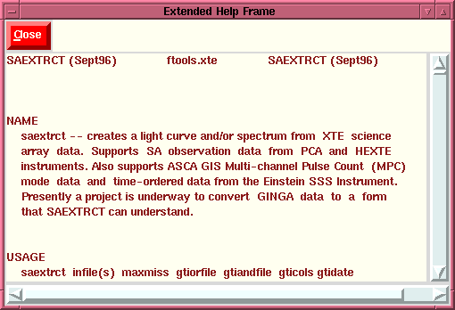

Extended Help Window
Extended Help Window

The Extended Help window is a scrollable listbox which contains
the result of an "fhelp" call specifying the task selected. This
window will contain all requests to Help, so it can be left up
and the user can receive the results of any farther Help
requests. Notice that the user can opt to Close the window
either by clicking the "Close" button or using "Ctrl+c" within
the help window. Also the use of the "Go" button, or the
keyboard binding "Ctrl+g" will cause this task to be
activated. If the task is a normal Ftools, i.e., one that uses a
parameter file, then a Parameter
Editing Window will appear in which the user can specify
the input values and submit the task for execution. If the task
selected does not use a parameter file, than an
Interactive Window is created in
which the user can interact with the program during execution.
INDEX
Brian K. Elza
Last modified: Mon Jul 28 14:43:52 EDT